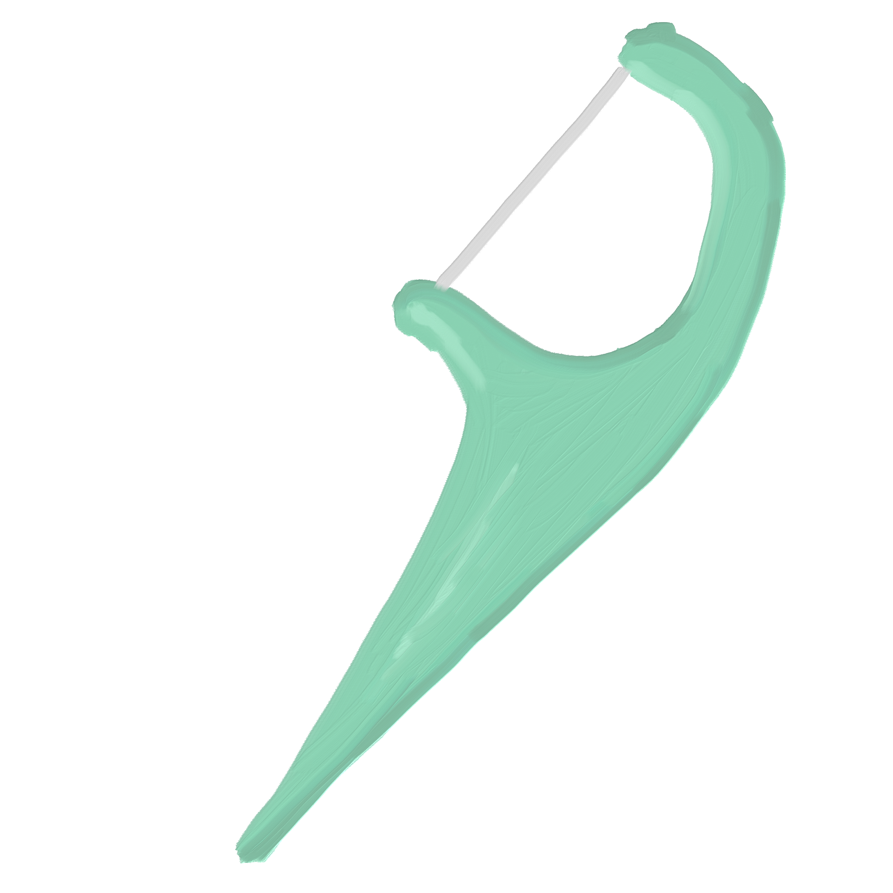

I've seen these on the ground a lot in my year and a half of living here. I guess a lot of people carry flossers on the go, and have the tendency to drop them rather than hold on for a trash can. I think I should start carrying flossers around. Too many times I've had to walk around with toothaches after getting food stuck in between my molars.
